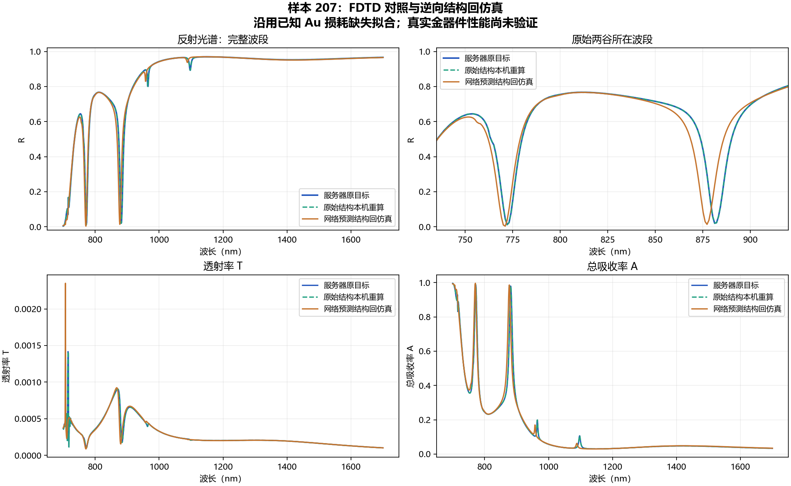

2026-10-21 · 生成器 1.0 · Au100 / 有限 SiO2 / As2Se3 四聚体
网络直接输出的结构保留两处明显深谷，但第二谷偏移约 4 nm，未通过此前 2 nm 参考门槛。不能将本例称为精确重建，也不能由这一例推出全部测试集的光谱精度。
原始结构本机重算与服务器目标的最大反射率差为 9.67e-7，排除了本例中明显的版本复现偏差。两组都达到自动关断状态 2；原始结构用时 573.437 秒，预测结构用时 733.922 秒。
| 谷 | 目标 λ（nm） | 预测结构 λ（nm） | 目标 R | 预测 R | 位移 | 宽度变化 |
|---|---|---|---|---|---|---|
| 1 | 772.072 | 771.071 | 1.202% | 0.365% | 1.001 nm | 5.13% |
| 2 | 881.181 | 877.177 | 1.990% | 1.359% | 4.004 nm | 3.81% |
全波段 R 的 RMSE 为 0.04041。宽度指半突出度宽度，不据此宣称模态 Q 或 BIC。层序与训练集一致，尚未验证 2.0 的中间金层结构。
